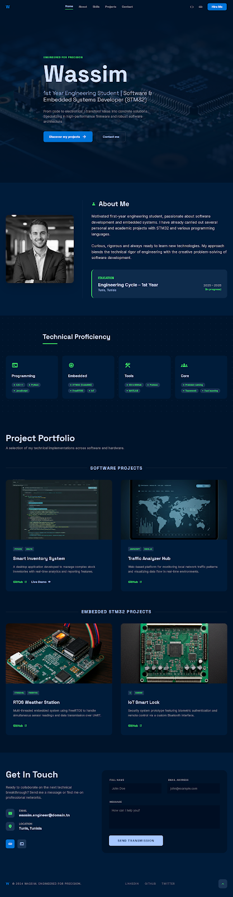
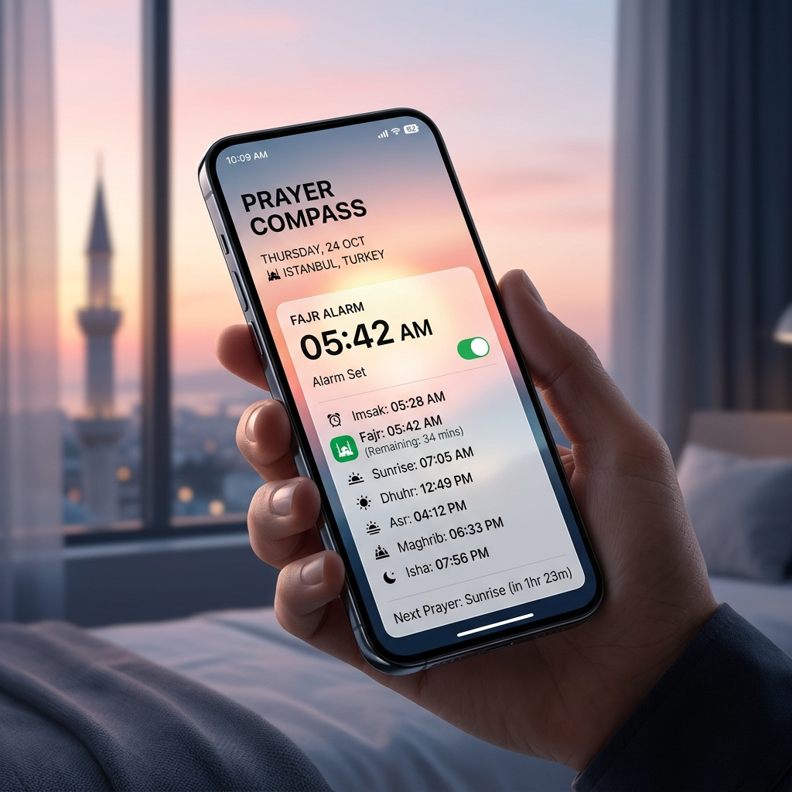
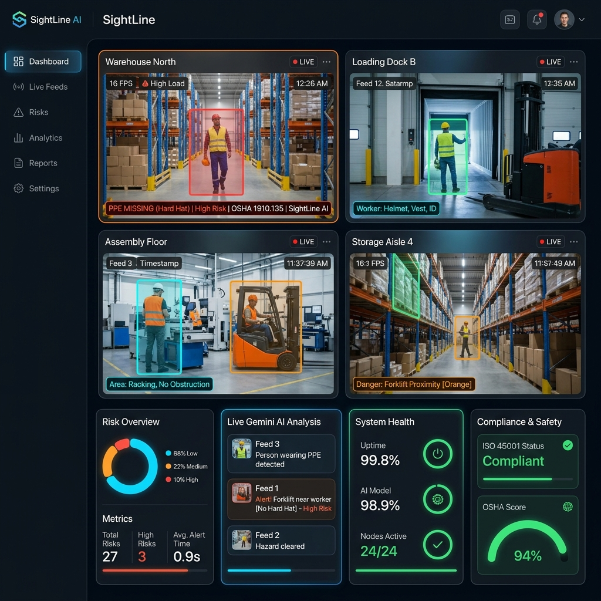
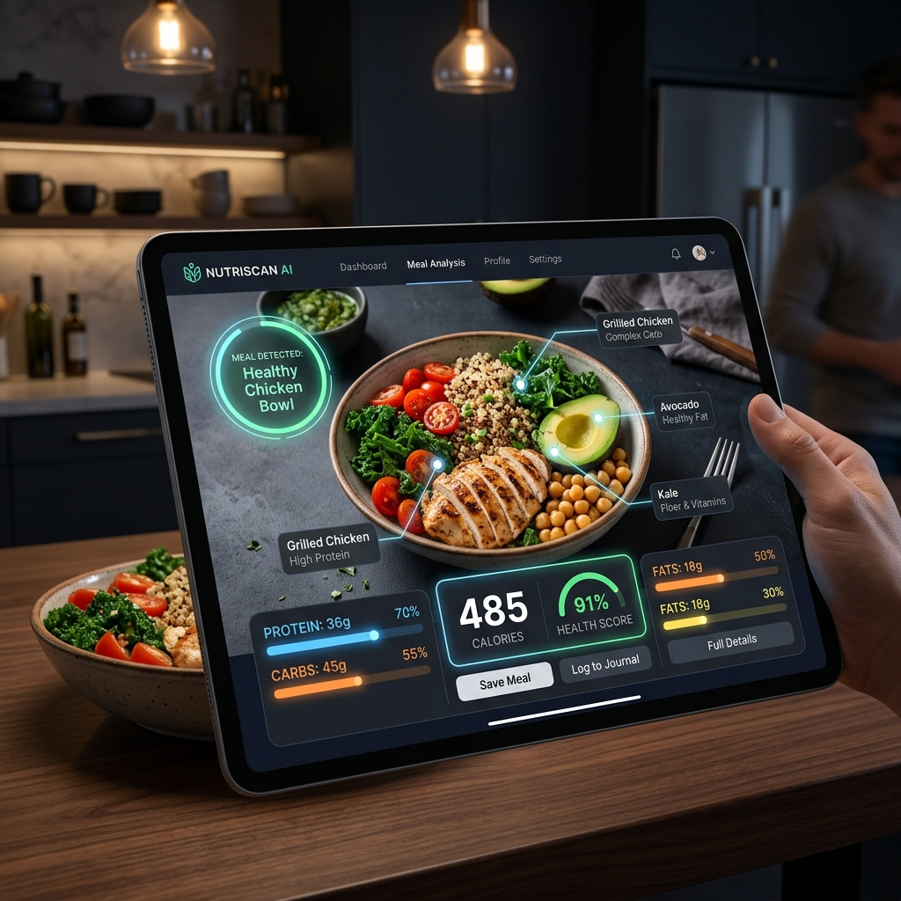
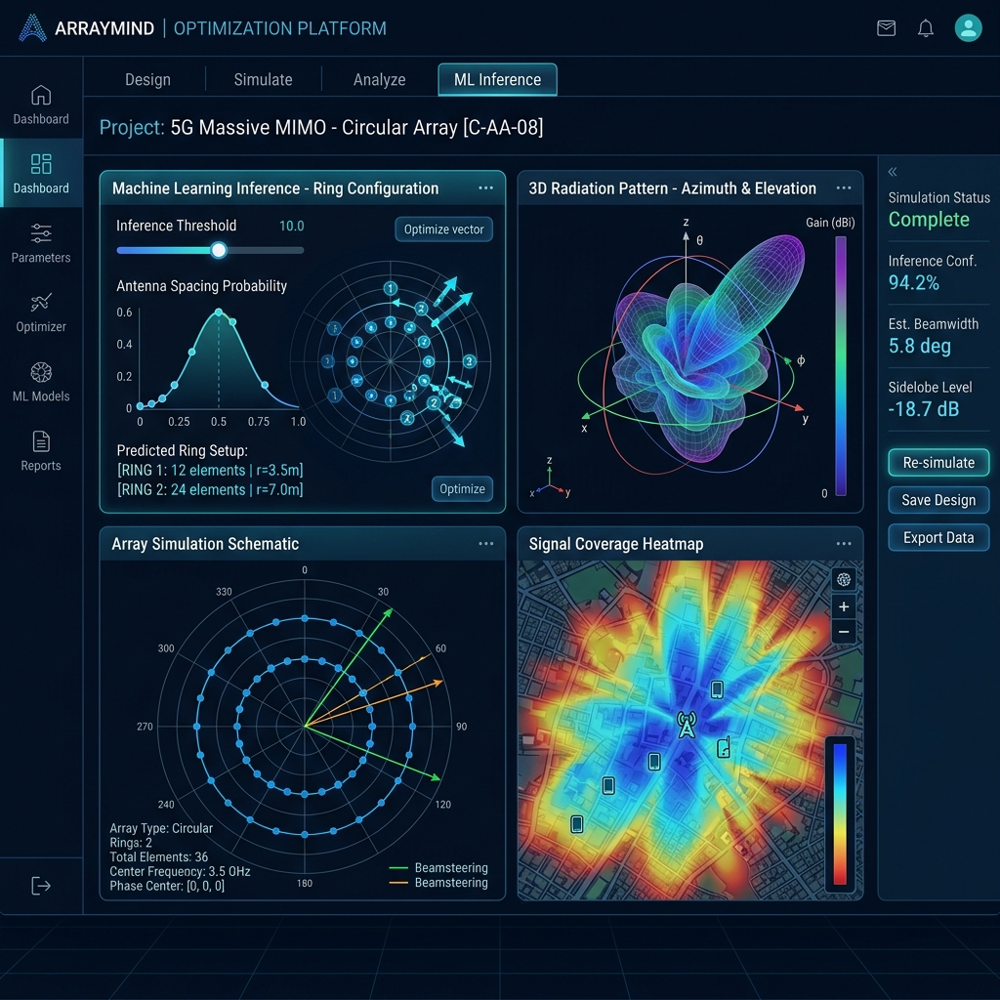
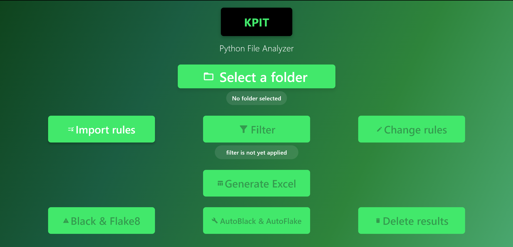
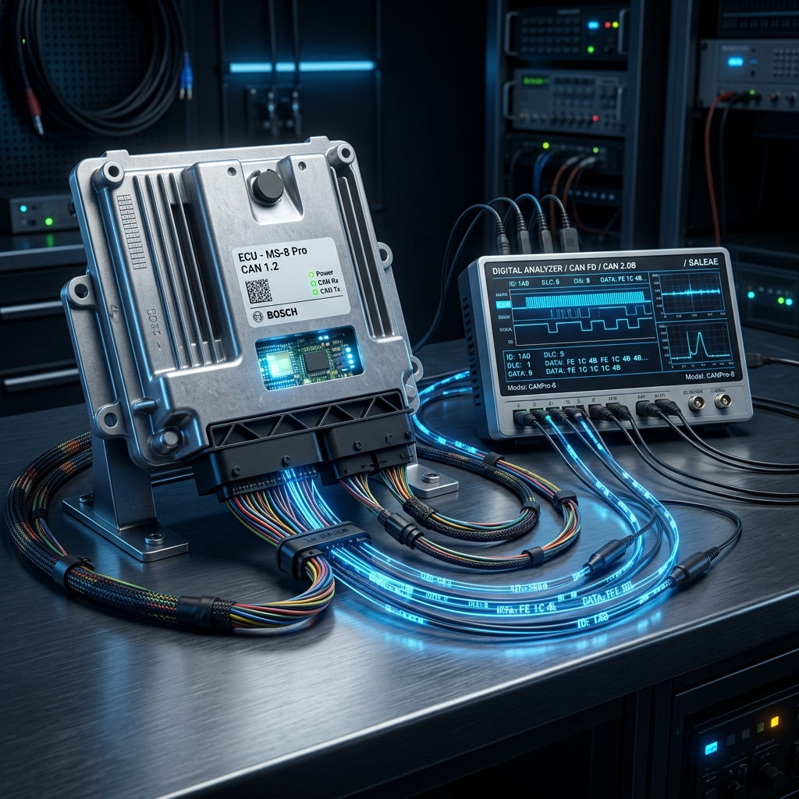
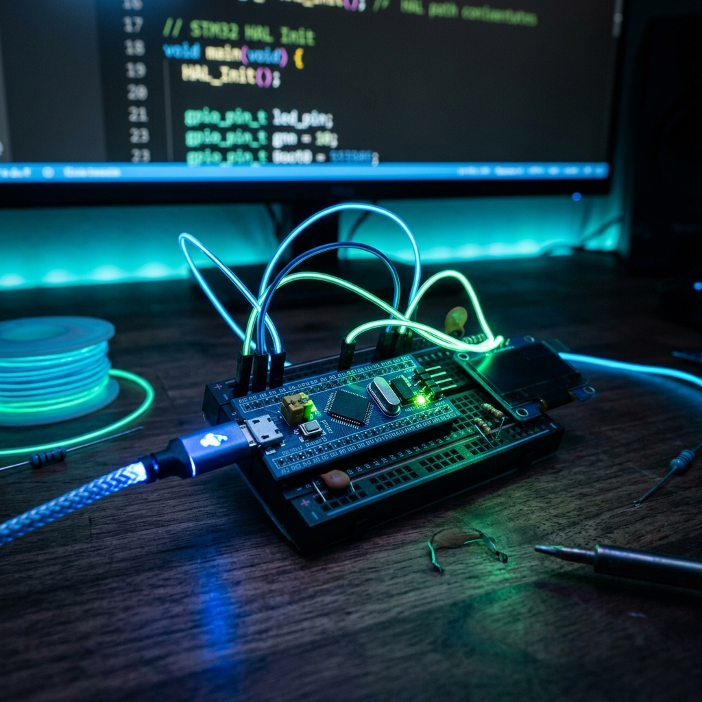
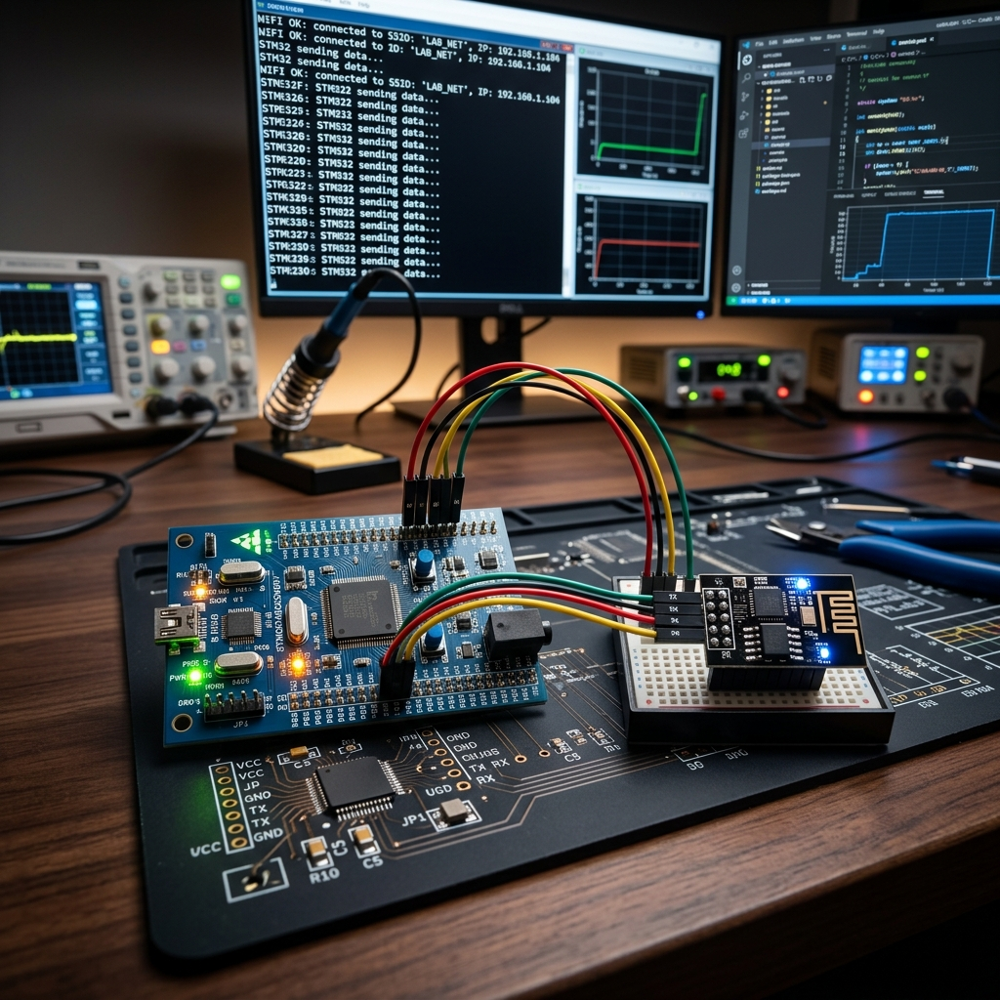

Wassim
1st Year Engineering Student | Software & Embedded Systems Developer
From register-level firmware to full-stack web platforms — I transform complex challenges into elegant, high-performance solutions. Bridging the gap between hardware and software, one project at a time.

person About Me
Versatile engineering student with a rare dual expertise in embedded firmware and full-stack software development. At INSAT Tunisia, I've gone far beyond the classroom — designing automotive diagnostic stacks in C, building AI-powered web platforms with React and NestJS, and developing cross-platform mobile applications from scratch.
What sets me apart is my ability to operate across the entire technology stack: from writing bare-metal register drivers on STM32 microcontrollers to deploying intelligent applications powered by machine learning. This end-to-end perspective allows me to architect solutions that are not just functional, but optimized at every layer.
school Education
National Institute of Applied Science and Technology (INSAT)
Tunisia
Sep 2025 – Present
Expected Graduation: 2028
chevron_right Engineering Cycle in Industrial IT and Automation
National Institute of Applied Science and Technology (INSAT)
Tunisia
Sep 2023 – Jun 2025
chevron_right Preparatory Cycle in Mathematics, Physics, and Industrial IT and Automation
work Experience
Python Tooling Developer — Intern
KPIT Technologies
2025
Remote
Designed and developed a cross-platform desktop application (Flutter + Python backend) to automate static code analysis for automotive software teams. The tool enforces coding standards critical for safety-certified codebases — featuring Black & Flake8 integration, customizable rule engines, real-time filtering, and one-click Excel report generation, significantly reducing manual review time.
Internal Coordinator & Active Member
Lions Club
Associative Work
Tunis
Led the internal organization and logistics for the "Couffin Ramadan" charitable initiative. Coordinated team efforts, managed resource distribution, and ensured the successful execution of the campaign. This experience significantly strengthened my skills in project management, team leadership, and cross-functional communication.
Technical Proficiency
Programming
Web & Mobile
Embedded
Tools
Core
Languages
Project Portfolio
A selection of my technical implementations across software and hardware.
Software Projects

Fajri App
Cross-platform mobile application engineered for precision — delivering accurate Fajr (dawn) alerts with geolocation-aware prayer time calculations. Built with Flutter, featuring persistent background alarms, local push notifications, and a clean minimalist UI designed for daily reliability.
Hospital Dashboard
Enterprise-grade hospital management platform built on a multi-tenant monorepo architecture. Features JWT-authenticated role-based access control, tenant-scoped data isolation, and an integrated Python ML pipeline for real-time patient risk prediction — all served through a modern React 19 frontend backed by NestJS and PostgreSQL.

SightLine
AI-driven workplace safety platform that transforms visual inspections into actionable intelligence. Upload site photos for automated risk scoring against OSHA, INRS, and ISO 45001 standards. Powered by Google Gemini with structured output, a RAG-based safety assistant, and a production-ready stack: React 19, Express, PostgreSQL, and Prisma ORM.

FoodWise
Smart nutrition companion that leverages Google Gemini's vision capabilities to decode any meal. Point your camera at food or scan packaging labels — get instant allergen detection, detailed macro/micronutrient breakdowns, and personalized dietary insights. Built with React 19 and TypeScript for a seamless, responsive experience.

Antenna Array Simulation
A full-stack monorepo for simulating circular antenna arrays, comparing radiation patterns, and running ML-based inference (MobileNetV2) on captured pattern images to predict ring configurations.

KPIT Python File Analyzer
Professional-grade desktop tool built during my KPIT Technologies internship. Automates Python code quality enforcement for automotive teams — integrating Black formatter, Flake8 linter, custom rule engines, and one-click Excel report generation. Cross-platform Flutter UI communicates with a Python analysis backend.
Embedded STM32 Projects

VECU-UDS: Automotive Diagnostic Stack
Production-quality implementation of the Unified Diagnostic Services (UDS) protocol stack in pure C, targeting automotive ECU diagnostics. Features complete ISO-TP transport layer handling, CAN bus communication management, and a virtual CAN testing environment — built with modular architecture and CMake for cross-platform compilation.

STM32 Mini-Projects Archive
Comprehensive firmware portfolio demonstrating mastery of the STM32F103C8T6 (Blue Pill) ecosystem. Each project provides dual implementations: one using the HAL abstraction layer and one at the bare-metal register level — covering GPIO, Timers, PWM, UART, ADC, and I2C peripherals. A progressive learning path from blinking LEDs to complex communication protocols.

Monitoring IoT (STM32 & ESP8266)
End-to-end IoT pipeline built from scratch: an STM32F4 microcontroller reads environmental sensors via 12-bit ADC, processes data in real-time, and transmits to the cloud through a custom ESP8266 Wi-Fi driver. Features efficient DMA-based UART reception (ReceiveToIdle), AT command protocol handling, and automated HTTP logging to the ThingSpeak analytics platform.
Get In Touch
Open to internship opportunities, collaborative projects, and technical challenges across software and embedded systems. Whether you need a full-stack developer, a firmware engineer, or someone who bridges both worlds — let's connect.
wassim.chouayakh@insat.ucar.tn
Location
Tunis, Tunisia
Message sent!
Thanks for reaching out. I'll get back to you as soon as possible.